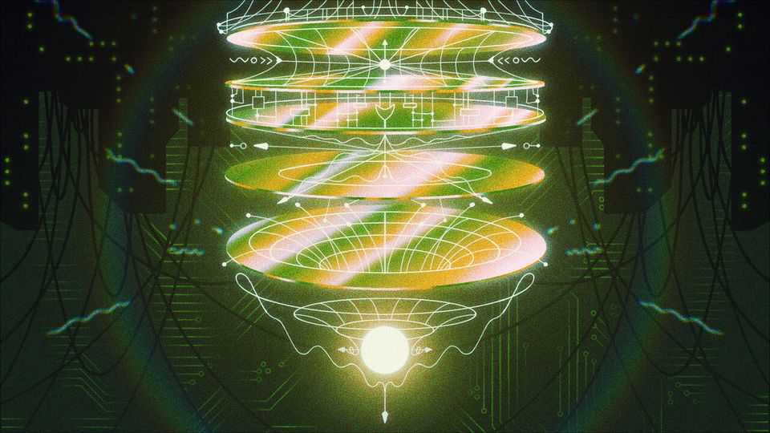

AI and quantum computers will be frenemies
The two technologies look more complementary than rivalrous

Jul 30th 2026
IN 2013 GOOGLE and NASA, America’s space agency, launched a quantum computing lab. The idea was to use a specialised quantum computer built by D-Wave, a Canadian firm, to improve the onerous task of training of machine-learning algorithms. Alas, the lab was ahead of its time not just once, but twice over. Neither machine learning—soon to be rechristened “artificial intelligence”—nor quantum computing were then mature technologies, as D-Wave’s boss, Alan Baratz, now concedes. A paper published in Nature Physics the year after the lab was founded showed that D-Wave’s machine was no better at AI work than a normal graphics-processing unit (GPU).
Yet the fates of AI and quantum computing remain entwined. Some see them as complementary: advances in AI have boosted attempts to build quantum computers, even as progress in quantum algorithms have suggested novel ways of improving AI. Others see the technologies as competitors. To listen to modern AI labs, by the time they are up and running there may not be many useful problems left for quantum computers to tackle.
The truth is less dramatic. There are three ways that AI and quantum computers overlap: first, in the problems they try to solve; second, in the way each can be used to build the other; and third, in the resources for which they are competing. And in each of those, co-operation seems to be the winning strategy.
The most promising use-case for quantum computers is simulating quantum mechanics itself—which in practice means things like materials science, chemistry and biology. The calculations necessary to simulate even fairly simple chemical reactions are so demanding that even supercomputers are limited to error-prone rough approximations. A sufficiently powerful quantum computer could allow true, high-fidelity simulations of reality at its most fundamental level.
But AI firms such as Isomorphic Labs or CuspAI are already working on systems that aim to solve the same challenges, relying on pattern recognition for predictions rather than super-accurate simulations. CuspAI’s cofounder Chad Edwards was previously a senior leader at Quantinuum, a quantum computing startup based in Cambridge, until the pace of progress in AI convinced him to switch sides.
Sometimes the conflict runs the other way. In March, Chinese researchers demonstrated a small-scale quantum system that could outperform classical approaches to weather forecasting. The paper was covered by the press in Hong Kong as a blow against the AI industry that risked making expensive data-centres obsolete.
Such zero-sum thinking is a mistake, says David Cox, IBM’s vice-president for AI models. Quantum computers will always have a place, he says, because “no other kind of computer…can do the things that a quantum computer can do.” An AI model trying to predict chemical reactions has first to be trained on millions of examples so it can infer the rules of the game. Since quantum computers will enable more accurate simulations, that should enable better predictions from models trained on those simulations. Those models, in turn, could help identify other promising bits of chemistry at which to point the quantum computers. “This is the first time that optimisation loop can be closed,” says Ruchir Puri, chief scientist at IBM Research.
A second way that quantum computing and AI can work together is to speed each other’s progress. AI systems can help with one of the biggest hurdles to building a powerful quantum computer: dealing with errors. The “quantum bits”, or qubits, from which quantum computers are built are notoriously unreliable. Engineers try to fix that by grouping several physical qubits into a single “logical” one, in which multiple physical qubits check each other’s work. Firms such as Infleqtion, a startup, think they can improve that process with an AI-powered “decoder” that sits alongside the quantum computer and helps handle the error-correction process. Writing software for quantum computers is notoriously hard, and AI could help with that too.
Quantum computers can, in turn, enhance AI. One example is a quantum twist on a so-called “reservoir”, which AI researchers use to model complicated systems such as financial markets. “Reservoir computing” lets an AI cheaply model a noisy, complex and fast-moving system by observing its impact on an intermediary. Each time new data is fed in to the reservoir, its state is altered slightly. The outputs of that system reflect the complexity of the inputs it has received, but can be much simpler to model—in the same way the ripples on the surface of a pool reflect the size, shape and speed of stones that have been thrown into it. The approach has analogues in classical computing, but quantum computers can exploit their unique properties to improve this process.
SQC, an Australian firm, sells exactly those sorts of quantum reservoir chips. Telstra, a telecoms firm that is both an investor and an early customer, cut training times for its AI models by 90%. But the perception that quantum computing is hard to work with lingers, says Michelle Simmons, SQC’s founder. “We don’t even mention quantum. We just talk about it as an ‘AI accelerator’.” Dr Cox, at IBM, agrees that quantum computers can help with the training AI models, a task presently performed by millions of GPUs in power-hungry data-centres. “There are some real opportunities right at the heart of how we do AI today to be leveraging quantum computers,” he says.
If he is right, the gains will not necessarily come from speed alone. Quantum computers are expensive and finicky things. The delicate quantum states that make them work need to be carefully protected from the outside world. At IBM’s research centre in Yorktown Heights, New York, one of the company’s System Two quantum computers hums in the middle of a room. The quantum computer itself sits in a vat of liquid helium, bringing its temperature down to a whisker above absolute zero. The specialised circuitry used to control it flanks the vat, and a much larger and louder bank of machines sits off to the side to power the cooling system.
But unwieldy as the machine is, it is still much smaller and cheaper than the vast data-centres full of GPUs required by top-end AI models. “Instead of gigawatts, we are in the megawatt type of level,” says Jerry Chow, who leads IBM’s quantum programme. For many fields, including AI, the appeal of quantum computing has started to switch: a technology that was once awaited for being faster now also looks attractive because it might be much more efficient. SQC’s own hardware is built to fit in a standard server rack, despite needing to be cooled to -269°C, and uses less than a tenth of the power of a rack full of GPUs.
IBM and D-Wave were among several quantum labs in which America’s government invested $2bn in May. Arvind Krishna, IBM’s boss, called it a statement of confidence that the quantum-computing industry was “right around the corner”. The AI sector will be waiting to greet it. ■